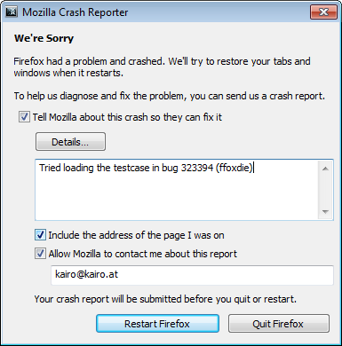

Table of Contents
Crash Life Cycle
The following slides are available in this presentation:
The Life Cycle of a Firefox Crash
Robert Kaiser,
"KaiRo" <kairo@kairo.at>
Crash Scene Investigator - CSI:Mozilla
Crash Scene Investigator - CSI:Mozilla
Slides: http://slides.kairo.at/brownbag-crashlife-2012/
- Created for a Brown Bag during Mozilla Stability Work Week 2012 in Mountain View.
- Written in HTML 5 with CSS 3 and JavaScript.
- Navigation via links on all slides, via access keys (e.g. "n"/Alt+Shift+N for "next") or back/forward arrow keys
- Contents
 06/2012
Robert Kaiser & the Mozilla CrashKill team
06/2012
Robert Kaiser & the Mozilla CrashKill team

Breakpad
- Fetch stack, modules, add-ons, metadata
- Prompt user
- Different UI for plugins
- Send report to Mozilla
about:crashes
- List of crashes for user
- Report ID, submission/transmission date
- ID ending in YYMMDD date: submission success
- Link to report or re-submission
Socorro: Collection, Processing
- Collector - 2M reports/day
- Processing, throttling
- Stackwalking
- Signature generation
Socorro: Reports, UI
- Aggregations per UTC day → Top Crashers (TCBS), etc.
- crash-stats.mozilla.com
- Build info from FTP, ADI info from metrics
Custom Reports
- Raw data in CSVs, direct DB access
- crash-analysis.mozilla.com
- Prototyping reports, one-off analysis
- arewestableyet.com
CrashKill
- Watch Socorro and custom reports
- Make sure bugs are reported
- Poke developers, escalate if needed
- Work with QA, third parties, blocklisting, etc.
- Feed into release decisions
QA & Developers
- Reproduce
- Investigate, debug
- Fix
- Verify
Bugzilla
- crash keyword, Crash Signature field
- topcrash keyword, startupcrash whiteboard
- regression, regressionwindow-wanted keywords
- needURLs keyword
Build
- Fix landing on mozilla-central (Nightly)
- Builds generated
- Symbols → Symbol Server → Socorro
- Possibly uplifted to Aurora or Beta
- Extremely grave cases: Chemspill